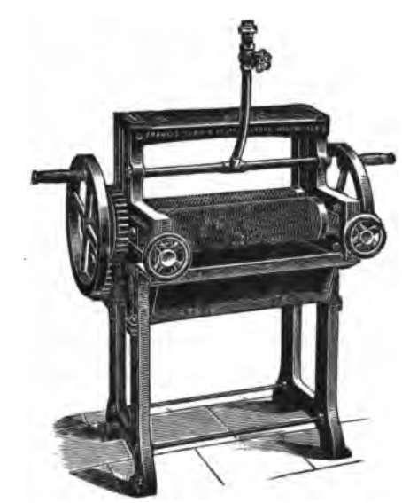
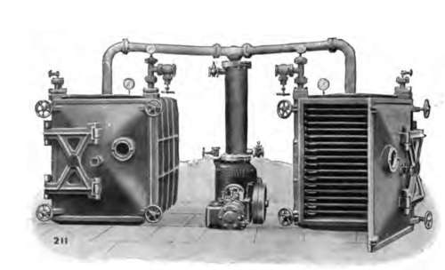

Factory Work On The Estate. Part 3
Description
This section is from the book "Rubber And Rubber Planting", by R. H. Lock. Also available from Amazon: Rubber And Rubber Planting.
Factory Work On The Estate. Part 3
Washing
The majority of commercial rubber, as purchased by the manufacturer, contains numerous impurities in various proportions. The first step in dealing with all wild rubbers is therefore to subject them to a thorough process of washing and purification. The following mean values of the loss in weight on washing are given by Weber for different commercial rubbers.
Table XXX. Loss Of Weight Of Rubber Samples On Washing
Trade name | Loss, per cent. |
Para, hard cure | 15 |
Congo Ball | 28 |
Ceara (Manicoba) | 32 |
Borneo | 48 |
One of the chief merits of plantation rubber from the point of view of the manufacturer lies in its high degree of purity, and the very small loss which consequently results when it is subjected to the washing process. In fact, in the near future, manufacturers who deal exclusively with plantation rubber will probably be able to omit the preliminary washing process altogether.
Owing to the clean character of the latex brought in to the factory on an estate, mere coagulation and drying would lead to the production of a rubber of a higher degree of purity than any wild kind. Washing is necessary however in order to remove the residue of the acid left over after coagulation, together with the soluble constituents of the latex. The latter serve no useful purpose, and are liable if retained to act as nutriment for moulds and bacteria.
The washing machines employed on estates are generally similar to those used by rubber manufacturers, but are constructed on a somewhat smaller scale. Such machines consist essentially of a pair of heavy steel rollers which revolve in opposite directions. The hand roller illustrated shows all the essential features of heavier machines which are driven by belts or shafting. The distance between the rollers is adjustable by special screws. A spray of water plays over the rollers, and a strainer is placed below the machine in order to collect any fragments of rubber which may be torn off in the washing process. Three types of machine, differing somewhat in detail, are employed for different purposes, namely sheeting, craping and macerating respectively.
Fig. 11. Hand washing machine.
Sheeting machines have smooth rollers which revolve at an equal rate of speed. The rubber sheets are simply passed two or three times between the rollers under a stream of water. The washing of sheet rubber is therefore largely superficial.
Craping machines have grooved rollers which revolve at different rates. The grooves may be arranged in a diamond pattern, or the roller may have plain parallel grooves disposed either longitudinally or in a slight spiral. The relative rates of revolution of the rollers varies between 2 :1 and 6:5. When the rubber is passed between such rollers, set fairly close together, under a stream of water, the rubber is stretched and torn and the washing is much more complete than if the rollers revolved at an equal rate. The rubber leaves the machine in a long lace-like strip, which is a convenient form for rapid drying.
Macerating machines are similar to craping machines, but have coarse grooves and a high differential rate of speed. They are employed in the preparation of cr£pe from bark-shavings and other sources where there is a large amount of impurity to be removed.
Drying
The simplest method of drying the rubber is to hang up the strips of crepe or sheets in a large and airy room. Light must be carefully excluded from the drying room, and thorough ventilation must be provided for. In the moist climates in which rubber is generally grown, drying is a very long process unless artificial means are employed for removing the moisture of the surrounding air. In practice the use of hot air is often adopted, the method being based on the processes customary in tea-withering lofts and in cacao-curing houses. Prolonged exposure to a high temperature is not however to be generally recommended, owing to the softening effect upon the rubber, and the danger that tackiness may arise. The use of cool air artificially dried has been suggested, such drying being effected either by mechanical cooling or by the use of such a substance as calcium chloride. However, the technical difficulties in the way of adopting such a process have not been entirely overcome, and the method is scarcely used in practice.
Plate VIII
Vacuum Drying Machine
The most rapid and convenient way of removing the moisture is by the use of vacuum driers. In these machines the thinly crêped rubber is spread on trays in a square chamber or oven provided with a door which can be shut quite air tight The chamber is heated by steam to a temperature of about go degrees F. It is then exhausted by means of a powerful air pump, and the pressure is kept low in this way for one or two hours. A large machine is capable of dealing with 200 to 300 lbs. of rubber in two hours. The rubber is taken from the drier in a soft and woolly condition, and is generally re-crêped whilst still warm. It should be pointed out that certain manufacturers are of opinion that rubber dried in this way is inferior in nerve to samples slowly dried in the open. Other experts however consider vacuum-dried rubber to be as good as any other.
In fact, from the fluctuations in market price of the different forms of plantation rubber, it may be concluded that manufacturers have not yet arrived at a unanimous preference for any particular method of preparation. At successive auctions the market may be headed by pale crêpe, block rubber, smoked sheet or by some other form. From the planter's point of view, crêiping and vacuum drying are probably the most convenient methods. It may therefore be useful briefly to recapitulate the successive processes gone through in an up-to-date factory in which these processes are employed. Although objections have been made to both these processes on account of their effect on the mysterious quality known as nerve, yet both are closely similar to some forms of treatment which the manufacturer himself employs. It seems probable therefore that objections to these methods will fade away as soon as large bulks which have been " worked " to an equal and known extent can be put upon the market
Continue to: